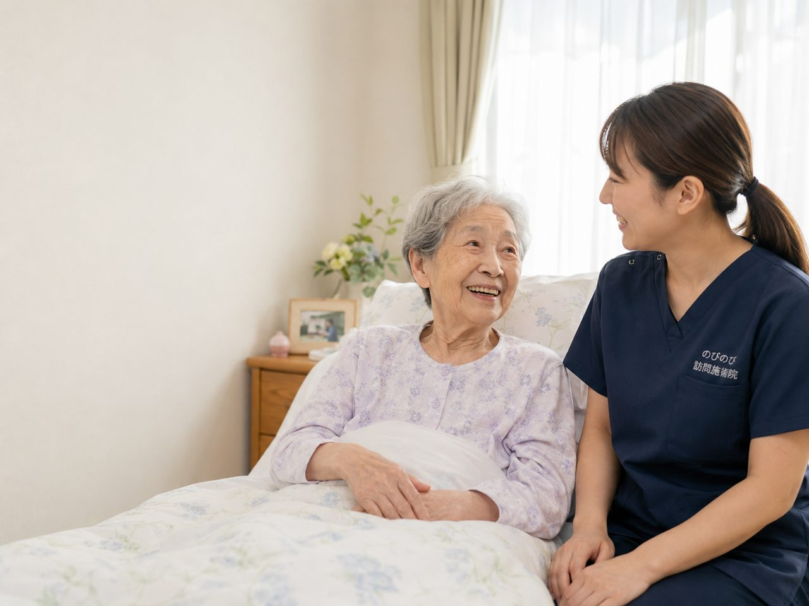

大雨や地震で訪問を見合わせる日はあります。そのとき、ご家庭の側で何を先に確かめればよいのか。停電でエアマットが止まったら、断水でお湯が使えなくなったら、避難先へ移ったら。この記事では、在宅で療養されている方のいる家で、災害のときに実際に困る順番に沿って整理しました。
この記事のポイント
停電のときは、エアマットや吸引器、在宅酸素が止まっていないかの確認が先です。断水中はお湯を使わない清拭に切り替えます。訪問を見合わせる日の判断はできるだけ早く電話でお伝えし、別の日に振り替えます。お休みした分の料金はかからず、受けた回数分だけのお支払いです。1回の総額は3,950円、1割負担で約395円。同意書は有効期間の中であれば取り直しは要りません。
大雨や地震のとき、その日の訪問はどうなりますか？
警報が出ていたり交通が乱れていたりすると、予定していた時間にうかがえないことがあります。のびのびでは道路と公共交通の様子を見て、その日の午前のうちに判断し、電話でご連絡しています。ご家族が仕事に出る前に決まっているほうが、その日の段取りを組みやすいからです。見合わせた分は、体調と週の予定を見ながら別の日に振り替えます。
ご家庭の側で「今日は落ち着かないので見送りたい」と思われたときも、遠慮なくおっしゃってください。うかがえるのは豊中市・吹田市・茨木市・高槻市・箕面市・摂津市・池田市、尼崎市・伊丹市、大阪市の淀川区・東淀川区・都島区・北区・旭区で、同じ市内でも道路の状況が違うため、地域によって判断が分かれる日もあります。
停電したら、体のケアより先に確かめたい機器のこと
在宅で療養されている方の部屋には、電気で動くものが集まっています。エアマット、電動ベッド、たん吸引器、在宅酸素の濃縮装置、人工呼吸器、経管栄養のポンプ。停電のときは、まずご家庭で使っているものを順に確かめてください。
在宅酸素には、停電時に予備のボンベへ切り替える手順が決まっていて、供給元の業者に24時間つながる連絡先があります。吸引器は手動式や電池式の予備があるかどうかで、その数時間の安全が変わります。電動ベッドは手動のハンドルで頭側を少し起こすだけでも呼吸が楽になります。私たちの施術は、これらが落ち着いてからの話です。
エアマットが止まった数時間で、お尻の皮膚は変わる
エアマットは、空気の入る場所を少しずつ変えることで、同じところに体重がかかり続けないようにしています。電源が落ちると、機種によっては数十分から数時間かけて空気が抜け、底についた状態になります。仙骨（お尻の真ん中の骨）やかかと、股関節の外側は、もともと圧がかかりやすい場所です。
停電が続くときは、無理のない範囲で2時間おきを目安に体の向きを変え、丸めたバスタオルを背中と膝の間に入れて、体重の乗る場所をずらしてください。指で軽く押しても白くならない赤みは、床ずれの入り口です。電気が戻ったあとの訪問では、まず皮膚を見せていただき、赤みのある場所は避けて手当てします。
断水のとき、お湯を使わずに体を清潔に保つ
水が出ない日は、体をふく方法を変えます。市販の清拭用ウェットタオルや水のいらない洗浄剤を使い、わきの下、股のあたり、足の指の間、背中といった蒸れやすいところを優先します。全身をきれいにしようとせず、蒸れる場所だけを一日に何度か、と割り切るほうが続きます。
飲み水が限られる状況では水分を控えてしまいがちですが、高齢の方はもともとのどの渇きを感じにくく、脱水に傾きやすいものです。備蓄の水は、飲む分を先に確保しておくと安心です。施術でうかがうときも、断水中は手指の消毒を多めにし、使い捨ての鍼と清潔なタオルを持参します。
エアコンが止まった部屋で起きること
停電でいちばん見落とされるのが室温です。夏、締め切った部屋の温度は短い時間で上がります。高齢の方は汗をかきにくく暑さも自覚しにくいため、本人が「平気」と言っていても、わきの下や背中が熱いのに皮膚が乾いていれば注意が要ります。窓を開け、首の横やわきの下を保冷剤で冷やしてください。
冬は逆に、部屋の温度が下がると体温も落ちます。厚い布団を一枚足すより、肌に近いところへ薄いものを重ね、頭と首、足元を覆うほうが暖かく過ごせます。湯たんぽを使うときは、感覚の鈍くなっている足に直接あてないでください。低温やけどは、痛みを感じないまま進みます。
避難先に移ったら、訪問は続けられますか？
避難所や親戚のお宅に移られた場合、そのまま同じようにうかがえるとは限りません。訪問鍼灸マッサージは、お住まいでの施術を前提にした保険の仕組みなので、一時的な滞在先での扱いは、場所の状況や加入されている保険の判断によって変わります。まずはご連絡をいただき、こちらから保険者に確認します。
避難先が対応している地域の中にあり、落ち着いて横になれる場所が確保できていれば、うかがえることもあります。難しい場合は、ご家族にできる動かし方を電話でお伝えします。膝を立てて左右に倒す、足首を回す、肩を上下させる。このくらいの動きでも、数日動かさないままでいるのとは違います。
数日動けなかったあと、体はどこから硬くなるか
災害のあとは、数日から数週間、生活のリズムが崩れます。動く時間が減ると、体は下から順に変わります。ふくらはぎと太ももの前が細くなり、股関節と膝が伸びにくくなり、そのあと肩が上がりにくくなる。もとの暮らしに戻ってから「前より歩きにくい」と気づくのは、たいていこの順番をたどったあとです。
再開の訪問では、いきなり以前と同じ内容には戻しません。関節の動く範囲と痛みの出方を確かめながら、その日の体に合う量に調整します。鍼やお灸でめぐりを促し、こわばった筋肉をゆるめて動かしやすい状態を整えることが期待できますが、戻り方には個人差があります。
停電や避難のあとに、どんな体のサインがあれば受診したらいい？
次のようなときは、施術より先に、かかりつけ医や救急にご相談ください。呼吸が浅く速い、唇や爪の色が悪い。在宅酸素や呼吸器が止まっていた時間があるなら、すぐに連絡が必要です。半日以上おしっこが出ない、反応が鈍い、皮膚をつまむと戻りが遅いときは、脱水が進んでいることがあります。汗が出ないのに体が熱くぐったりしていれば、熱中症を疑います。
押しても白くならない赤みや皮のむけた場所があれば、床ずれとして手当てが要ります。転んだあとに足の付け根が痛くて立てないときは、太ももの付け根の骨折が隠れていることがあります。数日食べられない、飲み込みでむせるようになった、熱が下がらないといった変化も、早めにご相談ください。
平時のうちに、家族と施術者で決めておけること
災害が起きてから調べるのでは間に合わないことを、あらかじめ書き出しておくと役に立ちます。在宅酸素や吸引器の業者の連絡先、かかりつけ医と訪問看護の連絡先、飲んでいる薬の一覧、同意書を書いてくださった医師の名前。これらを一枚の紙にまとめ、保険証の写しと一緒に持ち出せる袋へ入れておきます。
私たちの側でも、訪問先ごとに緊急の連絡先を控えています。ご家族が遠方にお住まいの場合は、近所の方やケアマネジャーを含めた連絡の順番を一度話し合っておくと動きやすくなります。決まった曜日にうかがっていると、こうしたときにも変化に気づきやすくなります。
お休みした月の料金と、同意書の扱い
料金は受けた回数に応じたお支払いなので、災害でお休みした分の負担は生じません。1回あたりの総額は3,950円で、1割負担の方はおよそ395円、2割負担の方は790円が目安です。表示の料金のほかに出張料などを別にいただくことはなく、介護保険の限度額とも別の枠なので、デイサービスや訪問看護の回数に影響しません。
同意書は、日数が空いても有効期間の中であればそのまま使えます。期間を過ぎていた場合はあらためて医師にお願いすることになりますが、その手続きは当院でお手伝いします。避難で保険証が手元にないといったときも、まずはご連絡ください。
よくある質問
台風で訪問を休んだ分の料金はかかりますか？
かかりません。受けた回数に応じたお支払いなので、お休みした分の負担は生じません。振り替えの日程は体調と週の予定を見ながら決めます。
停電したとき、まず何を確かめればいいですか？
電気で動いている機器が先です。在宅酸素、たん吸引器、人工呼吸器、エアマット、電動ベッド、経管栄養のポンプ。在宅酸素は供給元の業者に24時間の連絡先があります。
避難所に移っても来てもらえますか？
場所の状況と保険者の判断によります。まずご連絡ください。こちらから確認します。難しい場合は、ご家族にできる動かし方を電話でお伝えします。
しばらく間があいたら同意書は取り直しですか？
有効期間の中であればそのまま使えます。期間を過ぎていた場合はあらためて医師にお願いしますが、その手続きは当院でお手伝いします。